2026 National 5 Mathematics - Paper 1 questions
Source: Scottish Qualifications Authority (SQA) / Qualifications Scotland. This is a StemInteract HTML companion, not an official HTML edition. Selectable text is supplied alongside original page images. Use the images or original PDF for equations, powers, fractions, vector notation, tables and diagrams; text extraction cannot fully preserve mathematical layout.
Jump to a question
PDF page 1
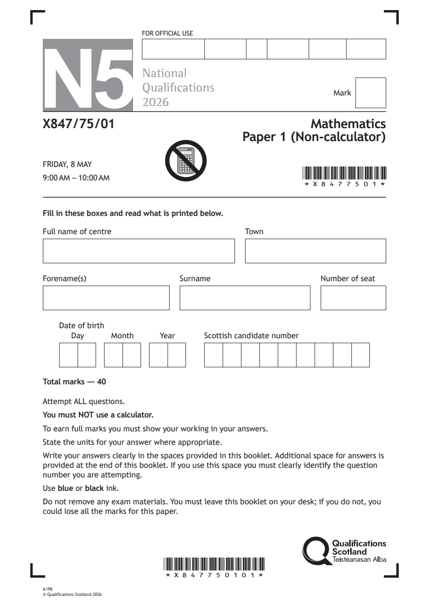
Selectable page text
FOR OFFICIAL USE
N5
National
Qualications
Mark
2026
X847/75/01 Mathematics
Paper 1 (Non-calculator)
FRIDAY, 8 MAY
9:00 AM – 10:00 AM
*X8477501*
Fill in these boxes and read what is printed below.
Full name of centre Town
Forename(s) Surname Number of seat
Date of birth
Day Month Year Scottish candidate number
Total marks — 40
Attempt ALL questions.
You must NOT use a calculator.
To earn full marks you must show your working in your answers.
State the units for your answer where appropriate.
Write your answers clearly in the spaces provided in this booklet. Additional space for answers is
provided at the end of this booklet. If you use this space you must clearly identify the question
number you are attempting.
Use blue or black ink.
Do not remove any exam materials. You must leave this booklet on your desk; if you do not, you
could lose all the marks for this paper.
*X847750101*
A/PB
© Qualifications Scotland 2026PDF page 2
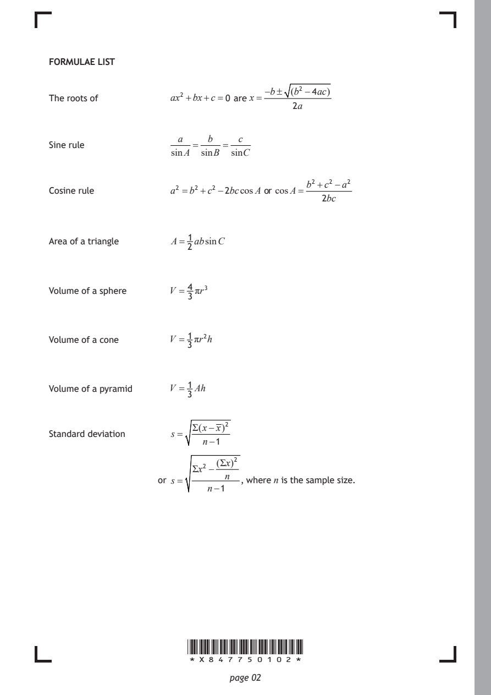
Selectable page text
FORMULAE LIST
−b± (b² −4ac)
The roots of ax² +bx+c=0 are x=
2a
a b c
Sine rule = =
sinA sinB sinC
b² +c²−a²
Cosine rule a² =b²+c² −2bccosA or cosA=
2bc
1
Area of a triangle A= absinC
2
4
Volume of a sphere V = πr³
3
1
Volume of a cone V = πr²h
3
1
Volume of a pyramid V = Ah
3
Σ(x−x)²
Standard deviation s =
n−1
(Σx)²
Σx² −
n
or s = , where n is the sample size.
n−1
*X847750102*
page 02PDF page 3
Paper 1, Question 1Paper 1, Question 2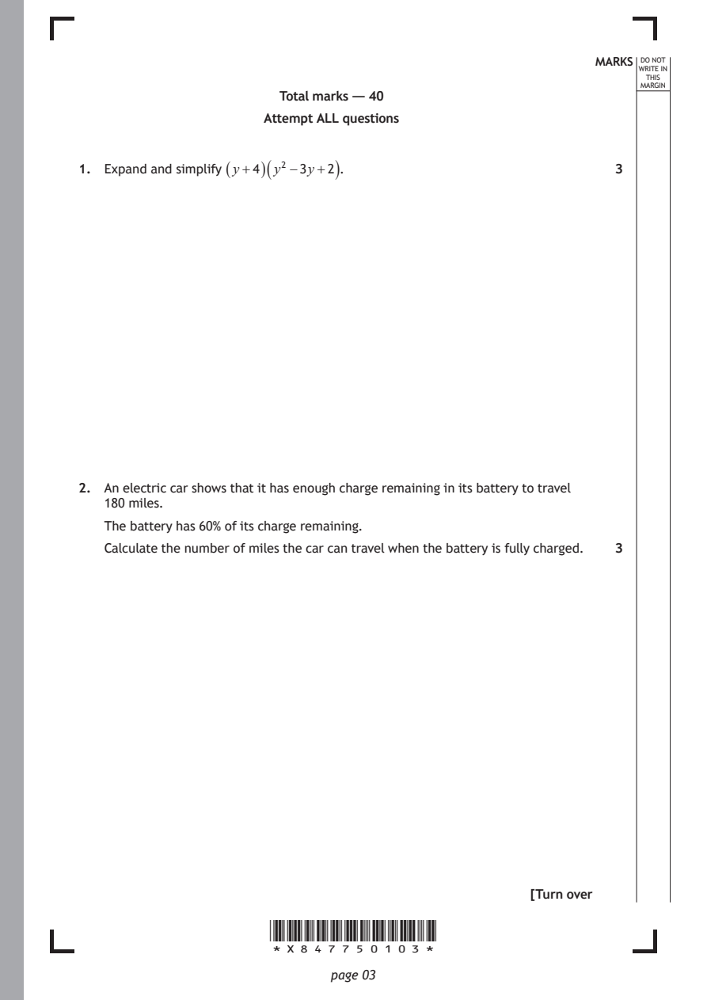
Selectable page text
MARKS _{W}^{D}_{R}^{O}_{I} _{T}^{N}OT
E IN
THIS
MARGIN
Total marks — 40
Attempt ALL questions
1. Expand and simplify (y+4 )( y² −3y+2 ) . 3
2. An electric car shows that it has enough charge remaining in its battery to travel
180 miles.
The battery has 60% of its charge remaining.
Calculate the number of miles the car can travel when the battery is fully charged. 3
[Turn over
*X847750103*
page 03PDF page 4
Paper 1, Question 3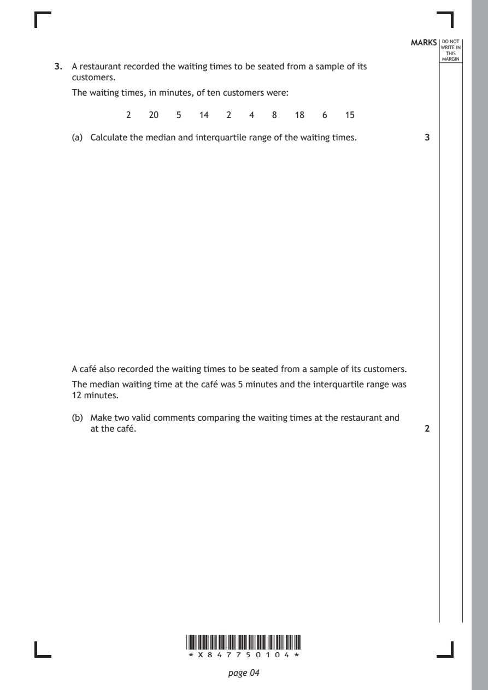
Selectable page text
MARKS _{W}^{D}_{R}^{O}_{I} _{T}^{N}OT
E IN
THIS
MARGIN
3. A restaurant recorded the waiting times to be seated from a sample of its
customers.
The waiting times, in minutes, of ten customers were:
2 20 5 14 2 4 8 18 6 15
(a) Calculate the median and interquartile range of the waiting times. 3
A café also recorded the waiting times to be seated from a sample of its customers.
The median waiting time at the café was 5 minutes and the interquartile range was
12 minutes.
(b) Make two valid comments comparing the waiting times at the restaurant and
at the café. 2
*X847750104*
page 04PDF page 5
Paper 1, Question 4Paper 1, Question 5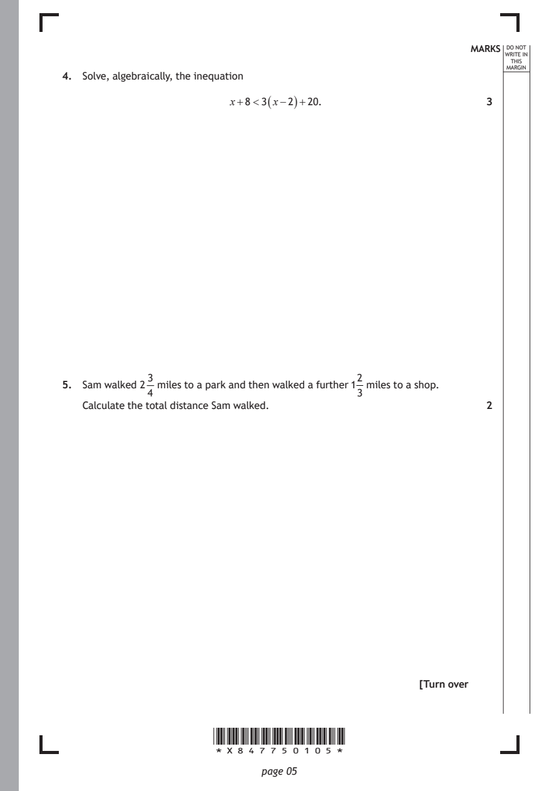
Selectable page text
MARKS _{W}^{D}_{R}^{O}_{I} _{T}^{N}OT
E IN
THIS
MARGIN
4. Solve, algebraically, the inequation
x+8<3 ( x−2 )+20. 3
3 2
5. Sam walked 2 miles to a park and then walked a further 1 miles to a shop.
4 3
Calculate the total distance Sam walked. 2
[Turn over
*X847750105*
page 05PDF page 6
Paper 1, Question 6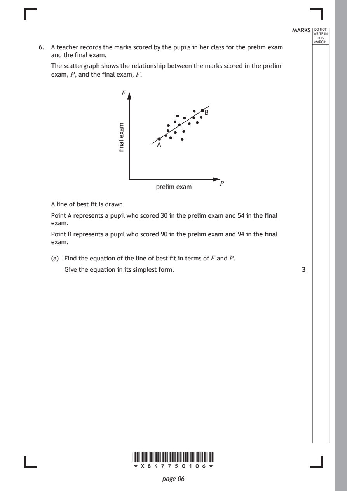
Selectable page text
MARKS _{W}^{D}_{R}^{O}_{I} _{T}^{N}OT
E IN
THIS
MARGIN
6. A teacher records the marks scored by the pupils in her class for the prelim exam
and the final exam.
The scattergraph shows the relationship between the marks scored in the prelim
exam, P, and the final exam, F.
A
prelim exam
*X847750106*
page 06
maxe
lanfi
F
B
P
A line of best fit is drawn.
Point A represents a pupil who scored 30 in the prelim exam and 54 in the final
exam.
Point B represents a pupil who scored 90 in the prelim exam and 94 in the final
exam.
(a) Find the equation of the line of best fit in terms of F and P.
Give the equation in its simplest form. 3PDF page 7
Paper 1, Question 7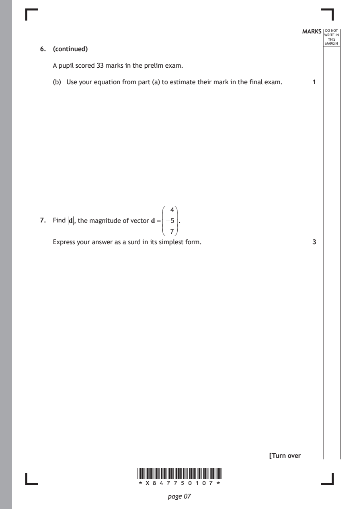
Selectable page text
MARKS _{W}^{D}_{R}^{O}_{I} _{T}^{N}OT
E IN
THIS
MARGIN
6. (continued)
A pupil scored 33 marks in the prelim exam.
(b) Use your equation from part (a) to estimate their mark in the final exam. 1
4
7. Find d, the magnitude of vector d= −5 .
7
Express your answer as a surd in its simplest form. 3
[Turn over
*X847750107*
page 07PDF page 8
Paper 1, Question 8Paper 1, Question 9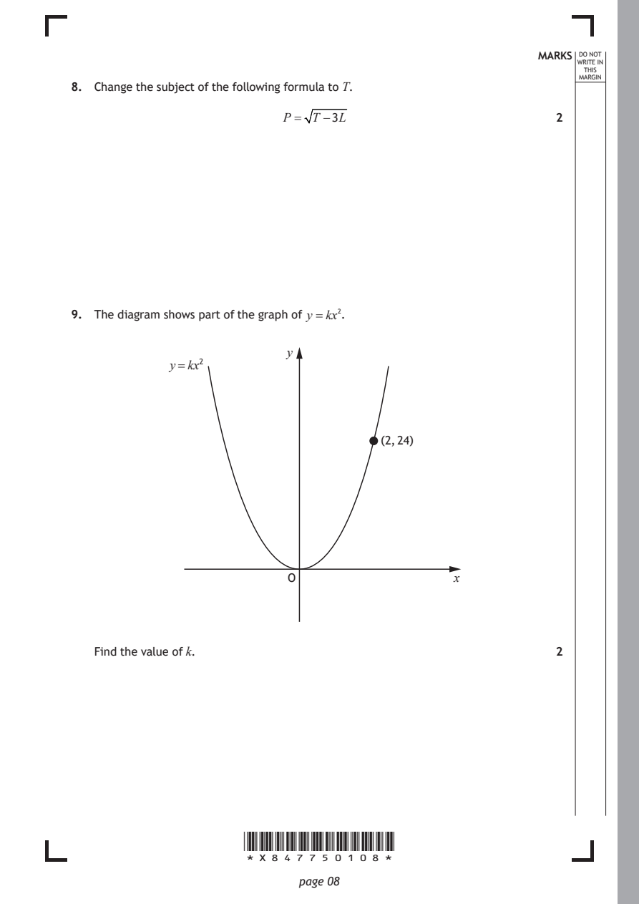
Selectable page text
MARKS _{W}^{D}_{R}^{O}_{I} _{T}^{N}OT
E IN
THIS
MARGIN
8. Change the subject of the following formula to T.
P= T −3L 2
9. The diagram shows part of the graph of y =kx².
y
y = kx²
(2, 24)
O x
Find the value of k. 2
*X847750108*
page 08PDF page 9
Paper 1, Question 10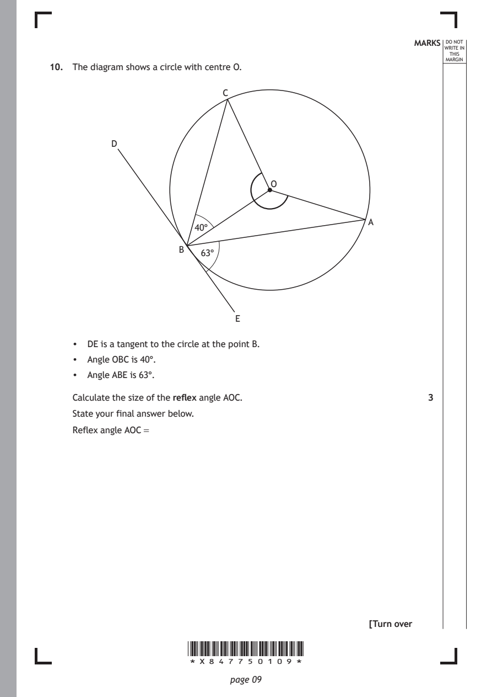
Selectable page text
MARKS _{W}^{D}_{R}^{O}_{I} _{T}^{N}OT
E IN
THIS
MARGIN
10. The diagram shows a circle with centre O.
C
D
O
A
40°
B
63°
E
• DE is a tangent to the circle at the point B.
• Angle OBC is 40°.
• Angle ABE is 63°.
Calculate the size of the reflex angle AOC. 3
State your final answer below.
Reflex angle AOC =
[Turn over
*X847750109*
page 09PDF page 10
Paper 1, Question 11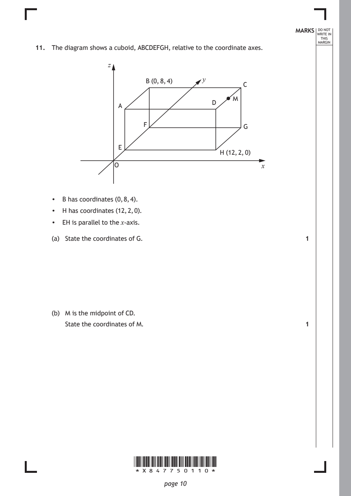
Selectable page text
MARKS _{W}^{D}_{R}^{O}_{I} _{T}^{N}OT
E IN
THIS
MARGIN
11. The diagram shows a cuboid, ABCDEFGH, relative to the coordinate axes.
z
B (0, 8, 4) y
C
M
D
A
F G
E
H (12, 2, 0)
O x
• B has coordinates (0, 8, 4).
• H has coordinates (12, 2, 0).
• EH is parallel to the x‑axis.
(a) State the coordinates of G. 1
(b) M is the midpoint of CD.
State the coordinates of M. 1
*X847750110*
page 10PDF page 11
Paper 1, Question 12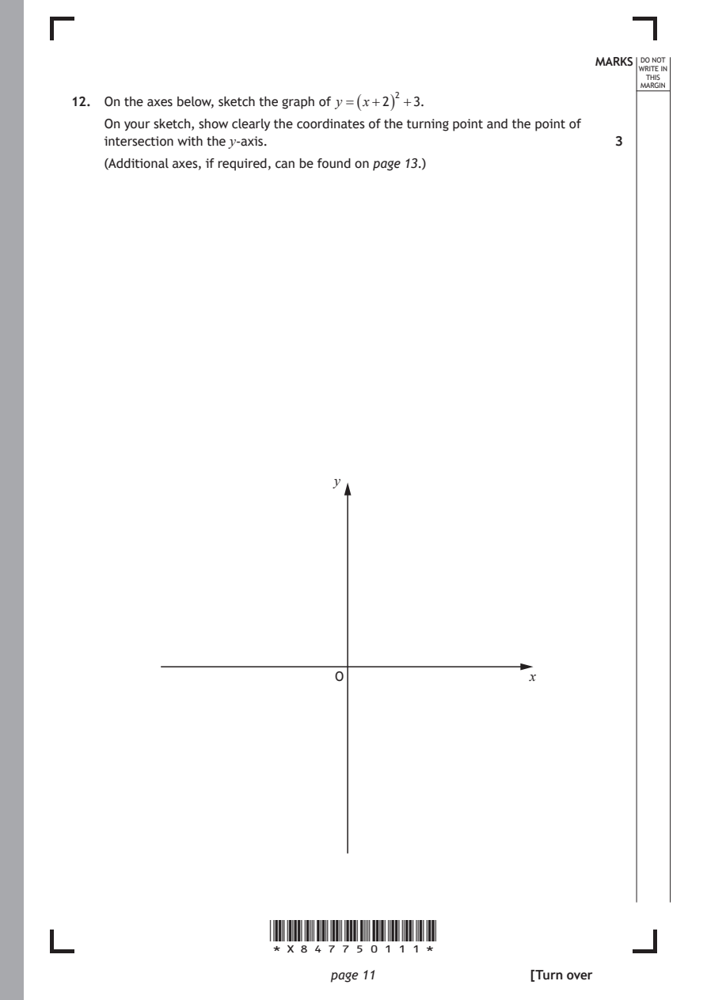
Selectable page text
MARKS _{W}^{D}_{R}^{O}_{I} _{T}^{N}OT
E IN
THIS
MARGIN
12. On the axes below, sketch the graph of y =( x+2 ) ² +3.
On your sketch, show clearly the coordinates of the turning point and the point of
intersection with the y‑axis. 3
(Additional axes, if required, can be found on page 13.)
y
O x
*X847750111*
page 11 [Turn overPDF page 12
Paper 1, Question 13Paper 1, Question 14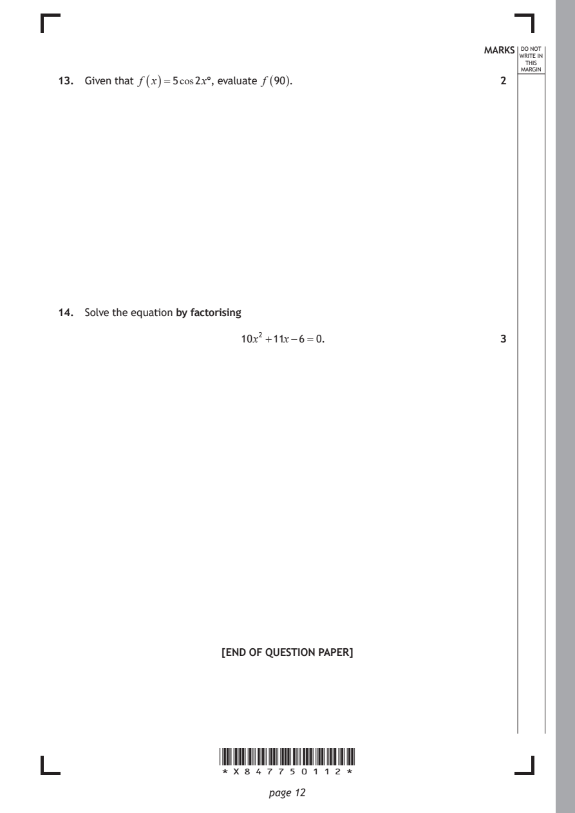
Selectable page text
MARKS _{W}^{D}_{R}^{O}_{I} _{T}^{N}OT
E IN
THIS
ARGIN
13. Given that f ( x )=5cos2x°, evaluate f (90). 2 ^{M}
14. Solve the equation by factorising
10x² +11x−6=0. 3
[END OF QUESTION PAPER]
*X847750112*
page 12PDF page 13
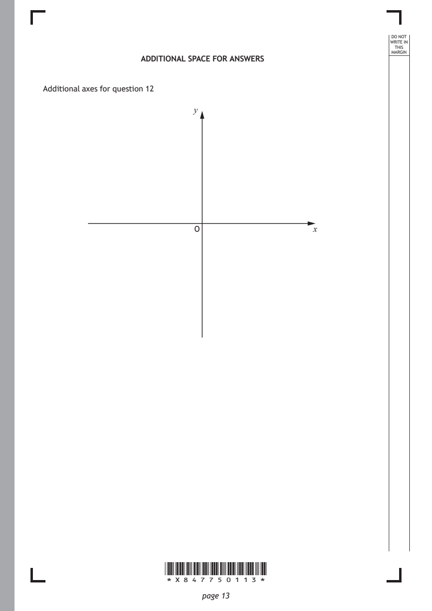
Selectable page text
DO NOT
WRITE IN
THIS
MARGIN
ADDITIONAL SPACE FOR ANSWERS
Additional axes for question 12
y
O x
*X847750113*
page 13PDF page 14
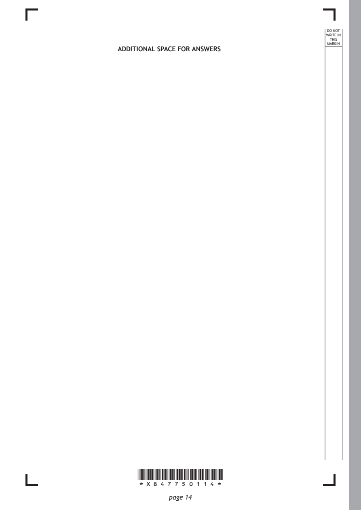
Selectable page text
DO NOT
WRITE IN
THIS
MARGIN
ADDITIONAL SPACE FOR ANSWERS
*X847750114*
page 14PDF page 15
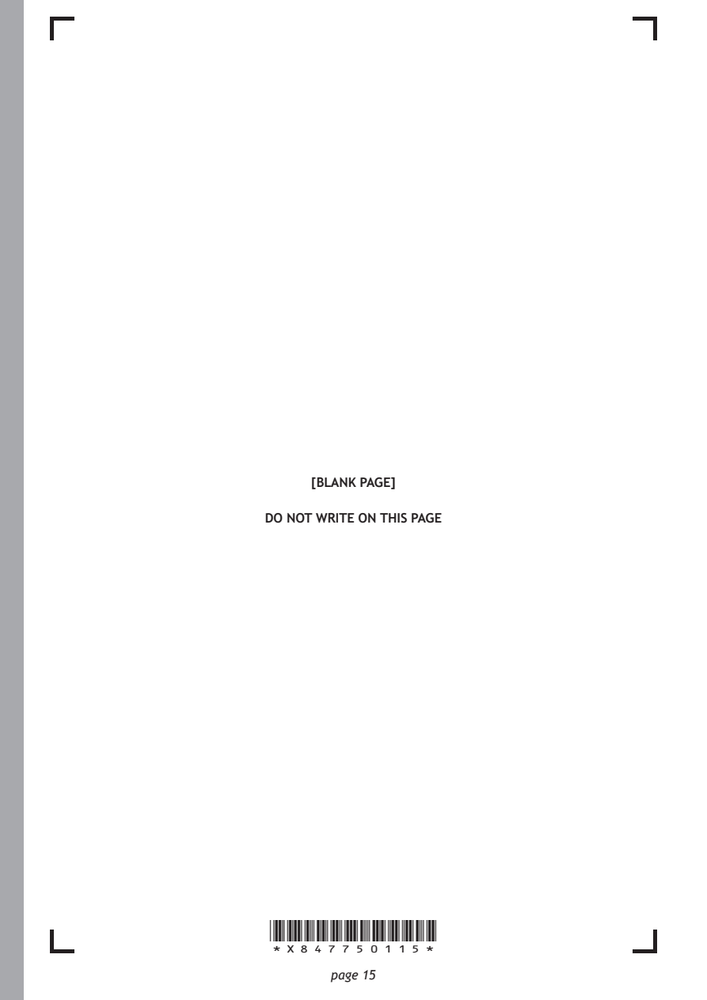
Selectable page text
[BLANK PAGE]
DO NOT WRITE ON THIS PAGE
*X847750115*
page 15PDF page 16
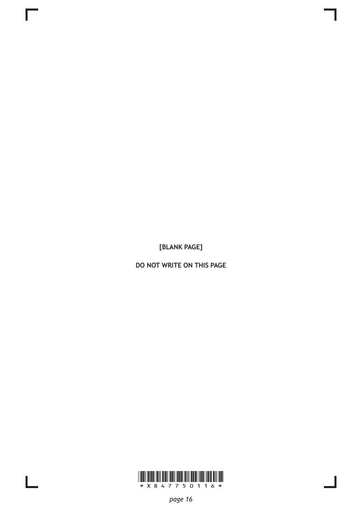
Selectable page text
[BLANK PAGE]
DO NOT WRITE ON THIS PAGE
*X847750116*
page 16